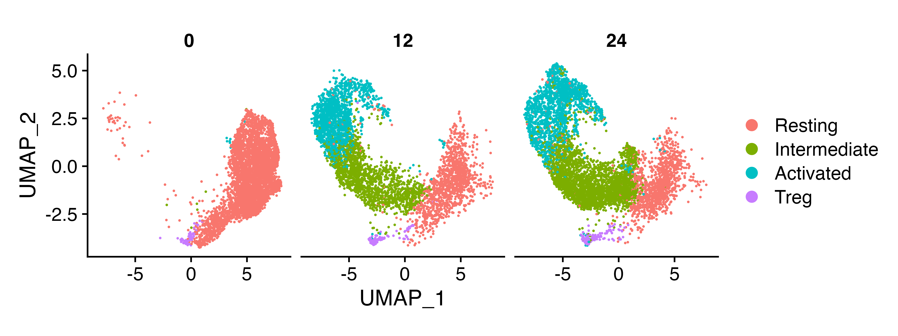
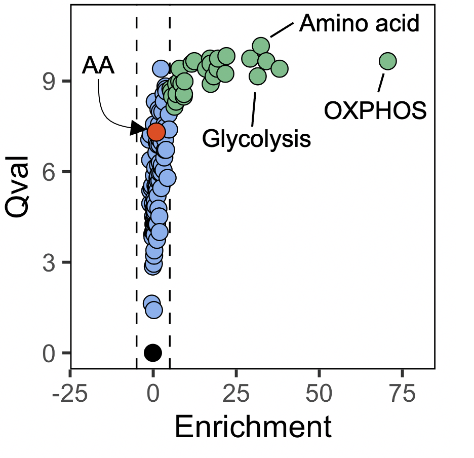

vignettes/comparing_two_populations.Rmd
comparing_two_populations.RmdHere we’re going to do a basic comparison of pathways between two populations using our naive CD4+ T cell dataset that you can find here.
Let’s load in a few packages we’ll need
And let’s load in the data we’re going to use. In this dataset, CD4+ T cells were left unstimulated, or stimuated for 12 or 24 hours with anti-CD3 and anti-CD28
naive_cd4 <- readRDS("naive_cd4.rds")In the naive_cd4 object, we have all our naive CD4+ T cells with metadata specifying the identified cell types and the hour specifying time point of cell harvesting.

We then need the expression matrices for the populations we want to compare. For this, we can use the seurat_extract function from the SCPA package, which takes a Seurat object and subsets the data based on the metadata specified in the Seurat columns e.g. here we want to take ‘Resting’ cells at 0hr, and ‘Activated’ cells at 24hr.
resting <- seurat_extract(naive_cd4,
meta1 = "Cell_Type", value_meta1 = "Resting",
meta2 = "Hour", value_meta2 = 0)
activated <- seurat_extract(naive_cd4,
meta1 = "Cell_Type", value_meta1 = "Activated",
meta2 = "Hour", value_meta2 = 24)After we have our data, we can define the pathways to compare. We curated a list of metabolic pathways from a few different sources (Hallmark, KEGG, and Reactome), which can be found here. The file is in standard gmt file format with the pathway name in column 1 and genes of that pathway in subsequent columns. Here we just converted a gmt file to csv, and manually curated a single file with all metabolic gene sets. SCPA just needs the filepath to these gene sets, so we can add this as an object to simplify our final chunk of code
pathways <- "combined_metabolic_pathways.csv"So now we have our samples and metabolic gene sets. To compare these pathways, we can just run the compare_pathways function.
rest_act <- compare_pathways(samples = list(resting, activated),
pathways = pathways)Now we have the results stored in the rest_act object, which we can then visualize.
rest_act <- rest_act %>%
mutate(color = case_when(FC > 5 & adjPval < 0.01 ~ '#6dbf88',
FC < 5 & FC > -5 & adjPval < 0.01 ~ '#84b0f0',
FC < -5 & adjPval < 0.01 ~ 'seagreen2',
FC < 5 & FC > -5 & adjPval > 0.01 ~ 'black'))
aa_path <- rest_act %>%
filter(grepl(pattern = "reactomeome_arachi", ignore.case = T, x = Pathway))
ggplot(rest_act, aes(FC, qval)) +
geom_vline(xintercept = c(-5, 5), linetype = "dashed", col = 'black', lwd = 0.3) +
geom_point(cex = 2.6, shape = 21, fill = rest_act$color, stroke = 0.3) +
geom_point(data = aa_path, shape = 21, cex = 2.8, fill = "orangered2", color = "black", stroke = 0.3) +
xlim(-20, 80) +
ylim(0, 11) +
xlab("Enrichment") +
ylab("Qval") +
theme(panel.background = element_blank(),
panel.border = element_rect(fill = NA),
aspect.ratio = 1)
An important aspect of SCPA is highlighted here, in that pathways showing large changes in multivariate distribution (i.e. pathway ‘activity’) do not always show mean changes. So looking at the plot, we see a large number of pathways that have high qvals, but no enrichment in any given population. In the plot above we highlight arachidonic acid as one particular pathway that shows this pattern, and in our wet lab work, we have shown that these pathways are also very relevant when understanding pathway importance. So here we suggest that the qval should be used as the primary statistic when judging biological relevance, and the pathway fold change/enirchment should only be a secondary informative value.